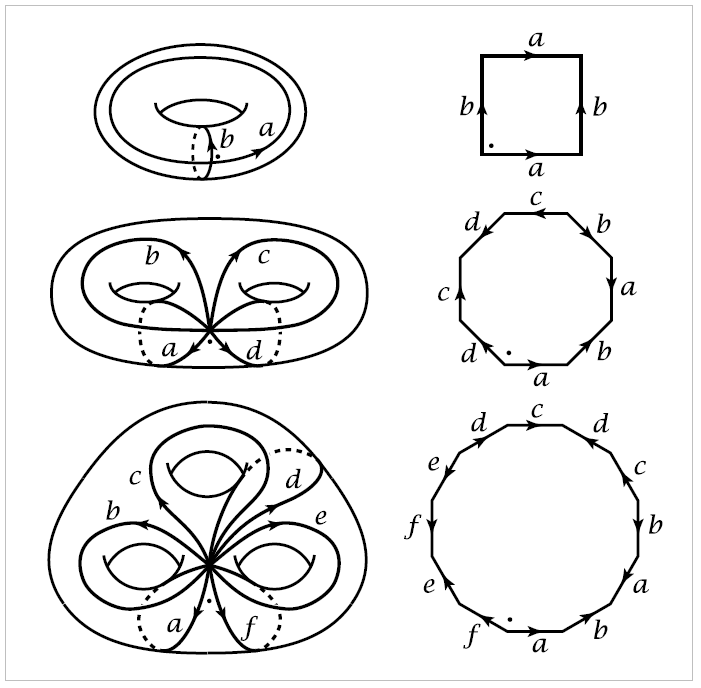

Cell complexes#
{kind=link}
A familiar way of constructing the torus \(S^1 \times S^1\) is by identifying opposite isdes of a square. More generally, an orientable surface \(M_g\) of genus \(g\) can be constructed from a polygon with \(4g\) sides by identifying pairs of edges, as shown in the figure in the first three cases \(g=1,2,3\). The \(4g\) edges of the polygon become a union of \(2g\) circles in the surface, all intersecting in a single point. The interior of the polygon ccan be thought of as an open disk, or a \(\mathbf{2}\)-cell, attached to the union of the \(2g\) circles. One can also regard the union of the circles as being obtained from their common point of intersection, by attaching \(2g\) open arcs, or \(\mathbf{1}\)-cells. Thus the surface can be built up in stages: Start with a point, attach \(1\)-cells to this point, then attach a \(2\)-cell.
A natural generalization of this is to construct a space by the following procedure:
Start with a discrete Set \(X^0\), whose points are regarded as \(0\)-cells.
Inductively, form the \(\mathbf{n}\)-skeleton \(X^n\) from \(X^{n-1}\) by attaching \(n\)-cells \(e^n_{\alpha}\) via maps \(\varphi_\alpha:S^{n-1} \rightarrow X^{n-1}\). This means that \(X^n\) is the quotient space of the disjoint union \(X^{n-1}\bigsqcup_\alpha D^n_\alpha\) with a collection of \(n\)-disks \(D^n_\alpha\) under the identifications \(x~\varphi_\alpha(x)\) for \(x \in \partial D^n_\alpha\). Thus as a set, \(X^n=X^{n-1}\bigsqcup_\alpha e^n_\alpha\) where each \(e^n_\alpha\) is an open \(n\)-disk.
One can either stop this inductive process at a finite stage, setting \(X=X^n\) for some \(n < \infty\), or one can continue indefinitely, setting \(X=\bigcup_nX^n\). In the latter case \(X\) is given the weak topology: A set \(A \subset X\) is open (or closed) iff \(A\cap X^n\) is open (or closed) in \(X^n\) for each \(n\).
A space \(X\) constructed in this way is called a cell complex or CW complex. The explanation of the letters ‘CW’ is given in the Appendix, where a number of basic topological properties of cell complexes are proved. The reader who wonders about various point-set topological questions lurking in the background of the following discussion should consult the Appendix for details.
If \(X=X^n\) for some \(n\), then \(X\) is said to be finite-dimensional, and the smallest such \(n\) is the dimension of \(X\), the maximum dimension of cells of \(X\).
Example 0.1. A \(1\)-dimensional cell complex \(X=X^1\) is what is called a graph in algebraic topology. It consists of vertices (the \(0\)-cells) to which edges (the \(1\)-cells) are attached. The two ends of an edge can be attached to the same vertex.
Example 0.2. The house with two rooms, pictured earlier, has a visually obvious \(2\)-dimensional cell complex structure. The \(0\)-cells are the vertices where three or more of the depicted edges meet, and the \(1\)-cells are the interiors of the edges connecting theses vertices. This gives the \(1\)-skeleton \(X^1\), and the \(2\)-cells are the components of the remainder of the space, \(X-X^1\). If one counts up, one finds there are \(29\) \(0\)-cells, \(51\) \(1\)-cells, and \(23\) \(2\)-cells, with the alternating sum \(29-51+23\) equal to \(1\). This is the Euler characteristic, which for a cell complex with finitely many cells is defined to be the number of even-dimensional cells minus the number of odd-dimensional cells. As we shall show in Theorem 2.44, the Euler characteristic of a cell complex depends only on its homotopy type, so the fact that the house with two rooms has the homotopy type of a point implies that its Euler characteristic must be \(1\), no matter how it is represented as a cell complex.
Example 0.3. The sphere \(S^n\) has the structure of a cell complex with just two cells, \(e^0\) and \(e^n\), the \(n\)-cell being attached by the constant map \(S^{n-1}\rightarrow e^0\). This is equivalent to regarding \(S^n\) as the quotient space \(D^n/\partial D^n\).
Example 0.4. Real projective \(\mathbf{n}\)-space \(\mathbb{R}P^n\) is defined to be the space of all lines through the origin in \(\mathbb{R}^{n+1}\). Each such line is determined by a nonzero vector in \(\mathbb{R}^{n+1}\), unique up to scalar multiplication, and \(\mathbb{R}P^n\) is topologized as the quotient space of \(\mathbb{R}^{n+1}-\{0\}\) under the equivalence relation \(v\sim \lambda v\) for scalars \(\lambda \neq 0\). We can restrict to vectors of length \(1\), so \(\mathbb{R}P^n\) is also the quotient space \(s^n/(v \sim -v)\), the sphere with antipodal points identified. This is equivalent to saying that \(\mathbb{R}P^n\) is the quotient space of hemisphere \(D^n\) with antipodal points of \(\partial D^n\) identified. Since \(\partial D^n\) with antipodal points identified is just \(\mathbb{R}P^{n-1}\), we see that \(\mathbb{R}P^n\) is obtained from \(\mathbb{R}P^{n-1}\) by attaching an \(n\)-cell, with the quotient projection \(s^{n-1} \rightarrow \mathbb{R}P^{n-1}\) as the attaching map. It follows by induction on \(n\); that \(\mathbb{R}P^n\) has a cell complex structure \(e^0\cup e^1\cup \dots \cup e^n\) with one cell \(e^i\) in each dimension \(i \leq n\).
Example 0.5. Since \(\mathbb{R}P^n\) is obtained from \(\mathbb{R}P^{n-1}\) by attaching an \(n\)-cell, the infinite union \(\mathbb{R}P^\infty=\bigcup_n \mathbb{R}P^n\) becomes a cell complex with one cell in each dimension. We can view \(\mathbb{R}P^\infty\) as the space of lines through the origin in \(\mathbb{R}^\infty = \bigcup_n \mathbb{R}^n\).
Example 0.6. Complex projective \(n\)-space \(\mathbb{C}P^n\) is the space of complex lines through the origin in \(\mathbb{C}^{n+1}\), that is \(1\)-dimensional vector subspaces of \(\mathbb{C}^{n+1}\). As in the case of \(\mathbb{R}P^n\), each line is determined by a nonzero vector in \(\mathbb{C}^{n+1}\), unique up to scalar multiplication, and \(\mathbb{C}P^n\) is topologized as the quotient space of \(\mathbb{C}^{n+1}-\{0\}\) under the equivalence relation \(v \sim \lambda v\) for \(\lambda \neq 0\). Equivalently, this is the quotient of the unit sphere \(S^{2n_1}\subset \mathbb{C}^{n+1}\) with \(v \sim \;lambda v\) for \(\mid \lambda \mid = 1\). It is also possible to obtain \(\mathbb{C}P^n\) as a quotient space of the disk \(D^{2n}\) under the identifications \(v \sim \lambda v\) for \(v \in \partial D^{2n}\), in the following way. The vectors in \(S^{2n+1} \subset \mathbb{C}^{n+1}\) with last coordinate real and nonnegative are precisely the vectors of the form \((w, \sqrt{1-|w|^2})\in \mathbb{C}^n \times \mathbb{C}\) with \(|w| \leq 1\). Such vectors form the graph of the function \(w \mapsto \sqrt{1-|w|^2}\). This is a disk \(D^{2n}_+\) bounded by the sphere \(S^{2n-1} \subset S^{2n+1}\) consisting of vectors \((w,0) \in \mathbb{C}^n \times \mathbb{C}\) with \(|w|=1\). Each vector in \(S^{2n+1}\) is equivalent under the identifications \(v \sim \lambda v\) to a vector in \(D^{2n}_+\), and the latter vector is unique if its last coordinate is nonzero. If the last coordinate is zero, we have just the identifications \(v \sim \lambda v\) for :math:` v in S^{2n-1}`.
From this description of \(\mathbb{C}^n\) as the quotient of \(D^{2n}_+\) under the identifications \(v \sim \lambda v\) for \(v \in S^{2n-1}\) it follows that \(\mathbb{C}P^n\) is obtained from \(\mathbb{C}P^{n-1}\) by attaching a cell \(e^{2n}\) via the quotient map \(S^{2n-1} \rightarrow \mathbb{C}P^{n-1}\) . So by induction on \(n\) we obtain a cell structure \(\mathbb{C}P^n= e^0 \cup e^2 \cup \cdots e^{2n}\) with cells only in even dimensions. Similarly, \(\mathbb{C}P^\infty\) has a cell structure with one cell in each even dimension.
After these examples we return now to general theory. Each cell \(e^n_\alpha\) in a cell complex \(X\) has a characteristic map \(\Phi_\alpha : D^n_\alpha \rightarrow X\) which extends the attaching map \(\varphi_\alpha\) and is a homeomorphism from the interior of \(D^n_\alpha\) onto \(e^n_\alpha\). Namely, we can take \(\Phi_\alpha\) to be the composition \(D^n_\alpha \hookrightarrow X^{n-1} \bigsqcup _\alpha D^n_\alpha \rightarrow X^n \hookrightarrow X\) where the middle map is the quotient map defining \(X^n\). For example, in the canonical cell structure on \(S^n\) described in Example 0.3., a characteristic map for the \(n\)-cell is the quotient map \(D^n \rightarrow S^n\) collapsing \(\partial D^n\) to a point. For \(\mathbb{R}P^n\) a characteristic map for the cell \(e^i\) is the quotient map \(D^i \rightarrow \mathbb{R}P^i \subset \mathbb{R}^n\) identifying antipodal points of \(\partial D^i\), and similarly for \(\mathbb{C}P^n\).
A subcomplex of a cell complex \(X\) is a closed subspace \(A \subset X\) that is a union of cells of \(X\). Since \(A\) is closed, the characteristic map of each cell in \(A\) has image contained in \(A\), and in particular the image of the attaching map of each cell in \(A\) is contained in \(A\), so \(A\) is a cell complex in its own right. A pair \((X,A)\) consisting of a cell complex \(X\) and a subcomplex \(A\) will be called a CW pair.
For example, each skeleton \(X^n\) of a cell complex \(X\) is a subcomplex. Particular cases of this are the subcomplexes \(\mathbb{R}P^k \subset \mathbb{R}P^n\) and \(\mathbb{C}P^k \subset \mathbb{C}P^n\) for \(k \leq n\). These are in fact the only subcomplexes of \(\mathbb{R}P^n\) and \(\mathbb{C}P^n\).
These are natural inclusions \(S^0 \subset S^1 \subset \cdots \subset S^n\), but these subspheres are not subcomplexes of \(s^n\) in its usual cell structure with just two cells. However, we can give \(S^n\) a different cell structure in which each of the subspheres \(S^k\) is a subcomplex, by regarding each \(S^k\) as being obtained inductively from the equatorial \(S^{k-1}\) by attaching two \(k\)-cells, the components of \(S^k-S^{k-1}\). The infinite-dimensional sphere \(S^\infty = \bigcup_n S^n\) then becomes a cell complex as well. Note that the two-to-one quotient map \(S^\infty \rightarrow \mathbb{R}P^\infty\) that identifies antipodal points of \(S^\infty\) identifies the two \(n\)-cells of \(S^\infty\) to the single \(n\)-cell of \(\mathbb{R}P^\infty\).
In the examples of cell complexes given so far, the closure of each cell is a subcomplex, and more generally the closure of any collection of cells is a subcomeplx. Most naturally arising cell structures have this property, but it need not hold in general. For example, if we start with \(S^1\) with its minimal cellstructure nad attach to this a \(2\)-cell by a map \(S^1 \rightarrow S^1\) whose image is a nontrvial subacr of \(S^1\), then the closure of the \(2\)-cell is not a subcomples since its contains only a part of the \(1\)-cell.